英検トレーナー の紹介ページへ戻る ・ DNGG-studio のアプリ一覧
英検トレーナー の使い方
英検トレーナーは、英検5級・4級・3級の単語、筆記（大問）、リスニング、ライティングを、1つのアプリで順番に学習できるアプリです。アカウントの登録はいりません。学習の記録はこの端末の中に保存されます。
画像の1のような赤い番号は、押すところと、説明の番号です。
この説明は バージョン 1.0.0 の画面に合わせています（2026年11月22日）。画面はこれから変わることがあります。画像の学習記録は見本です。
- はじめに：級を選ぶ
- つづきから学習（おすすめ）
- 問題の答え方と結果の画面
- 学習範囲を選んで学習
- 単語
- 大問1・大問2（語句・会話文）
- 大問3 並べ替え（5級・4級）
- 長文読解（4級・3級）
- ライティング（3級）
- リスニング
- まちがえた問題に再挑戦
- 学習記録と1日の目標
- 設定
- 広告について
- よくある質問
1. はじめに：級を選ぶ
アプリを開くとホームの画面になります。学習したい級を押すと、その級の学習メニューに進みます。
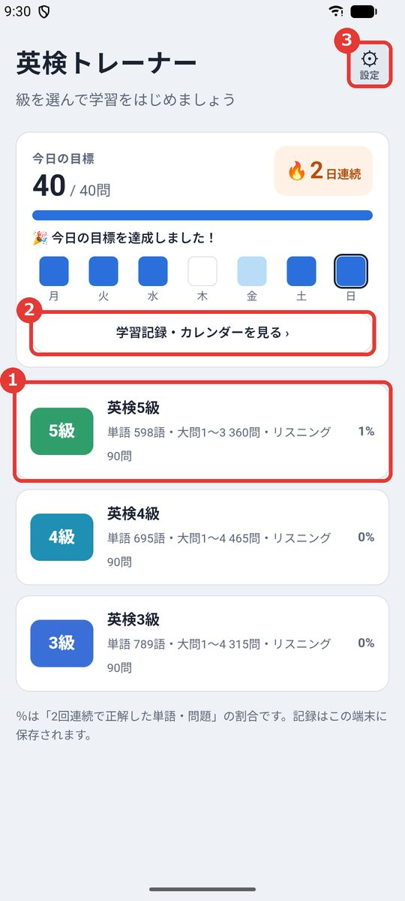
1級を選ぶ 2学習記録・カレンダーを見る 3設定
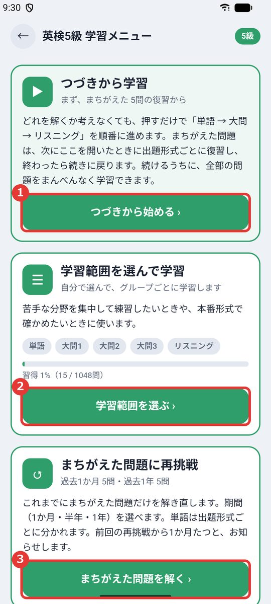
1つづきから学習 2学習範囲を選んで学習 3まちがえた問題に再挑戦
- ホームの「今日の目標」は、今日解いた問題数です。目標を達成した日が続くと「◯日連続」が増えます
- 級のボタンには、単語の数・大問の問題数・ライティングの題数（3級）・リスニングの問題数が出ます
- 級の右の％は、その級の「2回続けて正解した単語・問題」（習得）の割合です
- どの画面でも、左上の「←」か、スマホの戻るボタンで前の画面に戻ります。ホームで戻るボタンを押すとアプリを閉じます
2. つづきから学習（おすすめ）
どれを解くか考えなくても、押すだけで「単語 → 大問 → リスニング」を順番に進められます。はじめての方は、まずこれを使ってください。
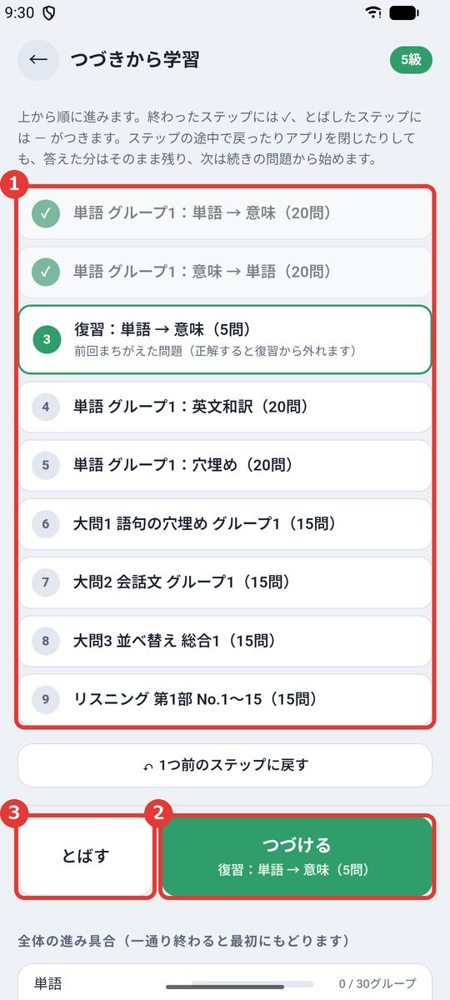
1今回のステップ（✓は終わったもの） 2つづける（始める） 3とばす
- 学習メニューの「つづきから始める」（はじめては「今日の学習を始める」）を押します
- 今回の流れが出るので、2「始める」または「つづける」を押します
- ステップを解き終えると結果の画面になり、「次へ」で次のステップに進みます
- 1回のコースは、単語のグループ（4つの出題形式）→ 大問1 → 大問2 → 大問3・4 → リスニングの順です。級によって入る大問が変わります
- まちがえた問題は覚えておき、次にここを開いたとき、最初に「復習：◯◯」のステップとして出ます。復習で正解すると、復習から外れます
- ステップの途中で戻ったりアプリを閉じたりしても、答えた分は残り、次は続きの問題から始まります
- 押しまちがえて「とばす」を押したときは、「1つ前のステップに戻す」で戻せます
- 単語・大問・リスニングは、一通り終わると最初にもどります。続けるうちに、全部の問題をまんべんなく学習できます
3. 問題の答え方と結果の画面
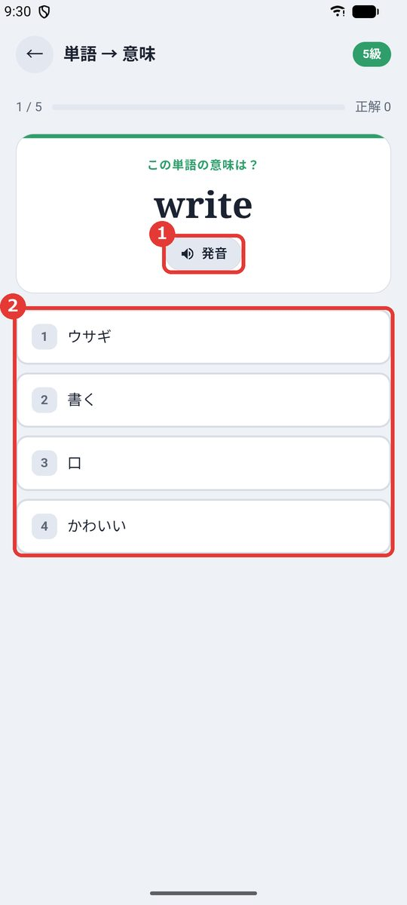
1発音を聞く 24つの選択肢から答えを押す
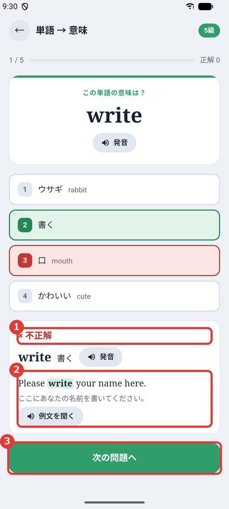
1正解・不正解 2例文と日本語訳（「例文を聞く」で読み上げ） 3次の問題へ
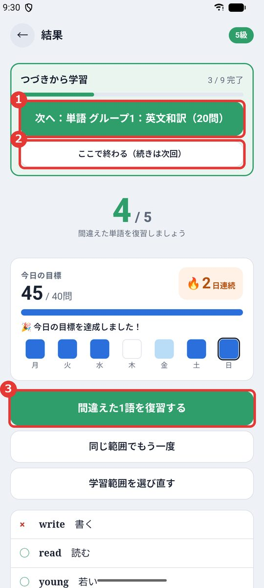
1次のステップへ 2ここで終わる（続きは次回） 3間違えた語だけをすぐ復習する
- 答えると、すぐに正解・不正解と解説が出ます。選ばなかった選択肢の意味も小さく出ます
- 結果の画面には、何問中何問正解したかと、1問ずつの◯×が出ます
- 2回続けて正解すると「習得」になります。まちがえると、もう一度 2回続けて正解するまで「習得」から外れます
4. 学習範囲を選んで学習
苦手な分野を集中して練習したいときや、本番の形式で確かめたいときに使います。学習メニューの「学習範囲を選ぶ」を押します。
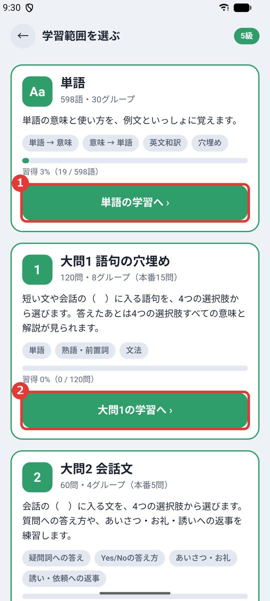
1単語の学習へ 2大問1の学習へ（下へ送ると、大問2・大問3・長文・ライティング・リスニングが続きます）
級によって、出てくる大問が変わります（5級は大問1〜3、4級は大問1〜4、3級は大問1〜4とライティング）。
5. 単語
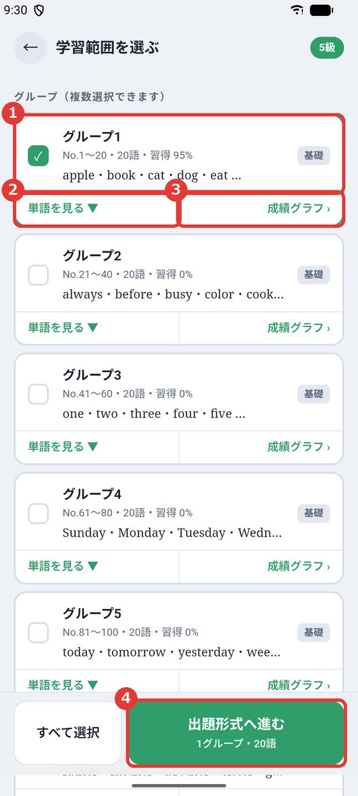
1グループを選ぶ（いくつでも） 2単語を見る 3成績グラフ 4出題形式へ進む
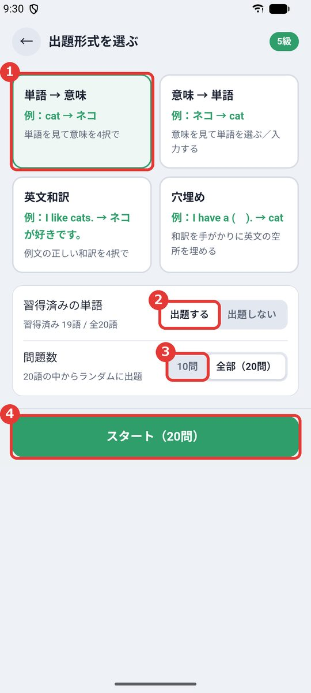
1出題形式 2習得済みの単語を出題するか 3問題数 4スタート
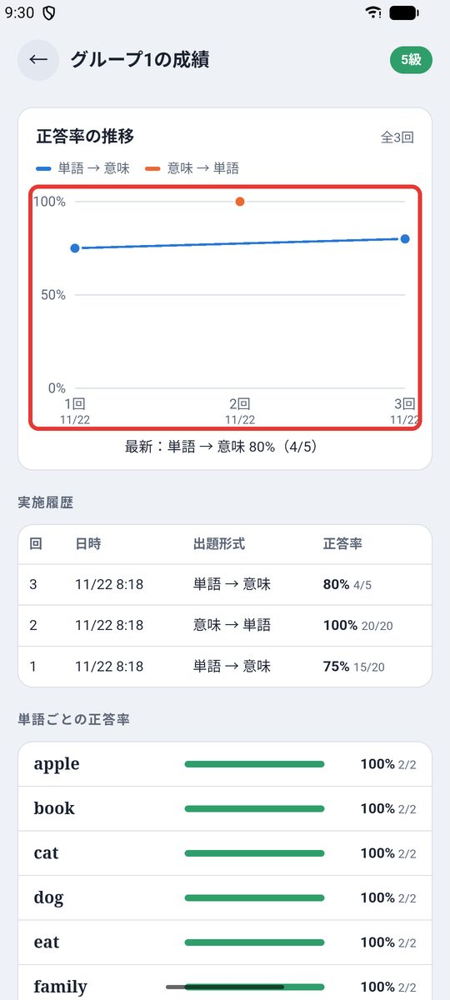
1正答率の推移のグラフ。下には、実施履歴と単語ごとの正答率が出ます
- 単語は 20語ずつのグループに分かれています。学習したいグループを押して1チェックを付けます
- 4「出題形式へ進む」を押し、形式・習得済みの単語を出すか・問題数を選んで「スタート」を押します
- 出題形式は「単語 → 意味」「意味 → 単語」「英文和訳」「穴埋め」の4つです。「意味 → 単語」は、選ぶか入力するかを選べます
- グループの名前の右の「基礎」「標準」「発展」は、むずかしさの目安です
- 「すべて選択」で、全部のグループを選べます
6. 大問1・大問2（語句・会話文）
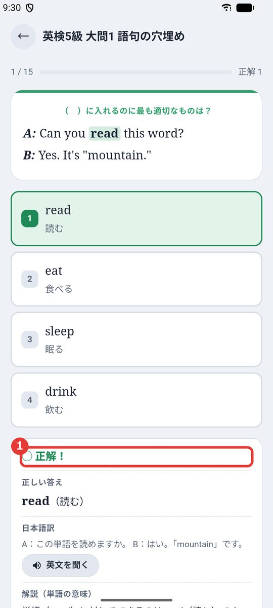
（ ）に入るものを選びます。答えると1正解・不正解、正しい答え、日本語訳、解説が出ます
- グループ（15問ずつ）を選んで「スタート」を押します。グループの下に、単語・熟語・文法など出題内容が出ます
- 答えたあとは、4つの選択肢すべての意味が見られます。「英文を聞く」で読み上げます
7. 大問3 並べ替え（5級・4級）
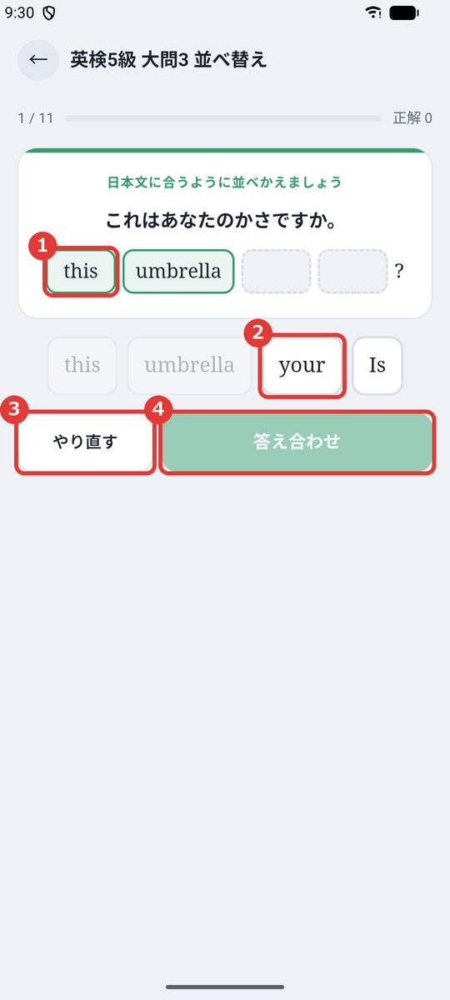
1並べた語（押すと外れます） 2下の語を押して順に並べる 3やり直す 4全部並べたら答え合わせ
- 日本文に合うように、下の語を英文の順に押していきます
- 全部並べると「答え合わせ」が押せるようになります。答えたあとは問題ごとの解説が見られます
- グループの分け方は「文法別」と「総合（15問ずつ）」から選べます。文法別では、苦手な文法だけを集中して練習できます
- 「くわしい文法の説明を見る」で、そのグループの文法の説明が開きます
- 本番と同じように「◯番目と◯番目の組み合わせ」を選ぶ「英検形式」でも練習できます
8. 長文読解（4級・3級）
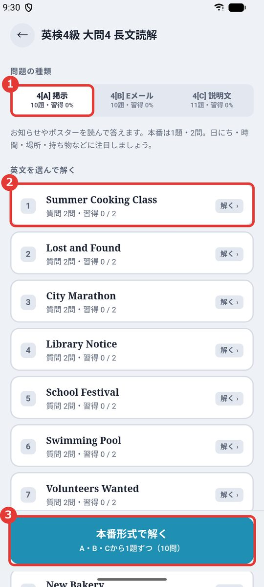
1問題の種類（掲示・Eメール・説明文） 2英文を選んで解く 3本番形式で解く（A・B・Cから1題ずつ）
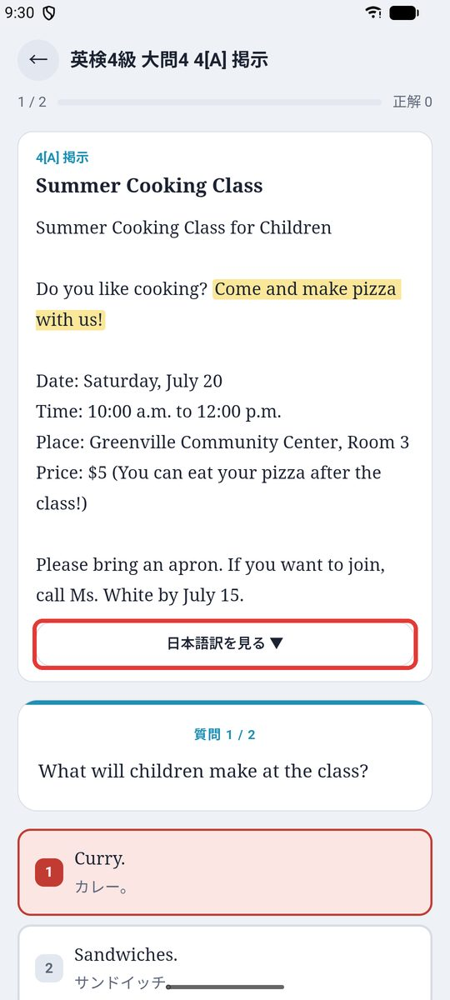
答えると、本文の答えの根拠になる部分に色がつきます。1「日本語訳を見る」で本文の訳が開きます
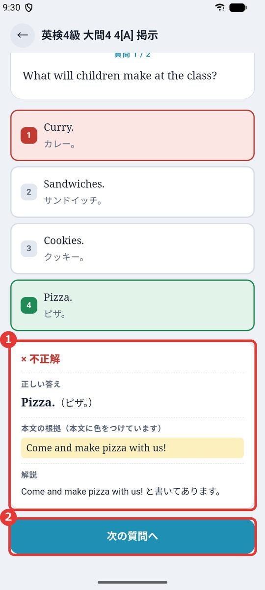
1正しい答え・本文の根拠・解説 2次の質問へ
9. ライティング（3級）
英語で文章を書く練習です。Eメールの返信（15〜25語）と英作文（25〜35語）があります。
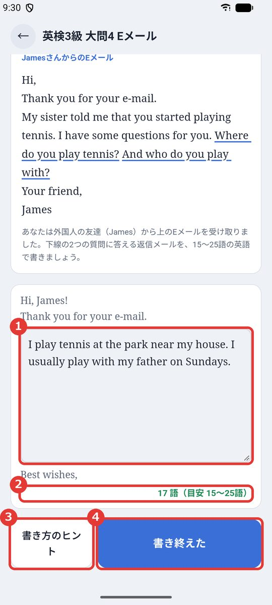
1英文を書く 2語数（目安に入ると緑） 3書き方のヒント 4書き終えた
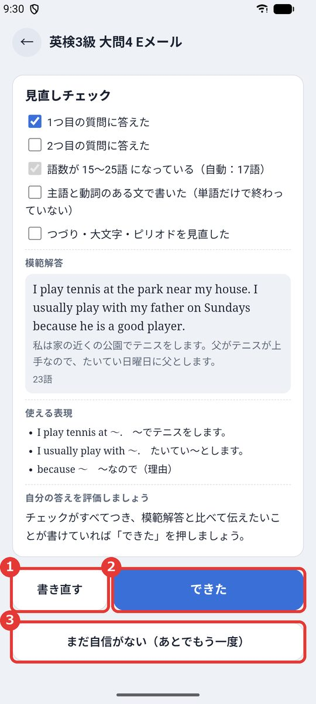
見直しチェックと模範解答・使える表現を見て、1書き直す 2できた 3まだ自信がない
- 問題の種類（Eメール・英作文）と問題を選び、「書く」を押します
- 英文を書いて「書き終えた」を押します。書いた英文は自動で保存されるので、途中でやめても続きから書けます
- 見直しチェックにチェックを付け、模範解答と比べて、自分で「できた」か「まだ自信がない」を押します
書いた英文は自動では採点しません。チェックリストと模範解答で自分で確かめてください。できれば先生や家族にも見てもらうと効果的です。「できた」を2回（別の日でも可）押すと「習得」になります。
10. リスニング
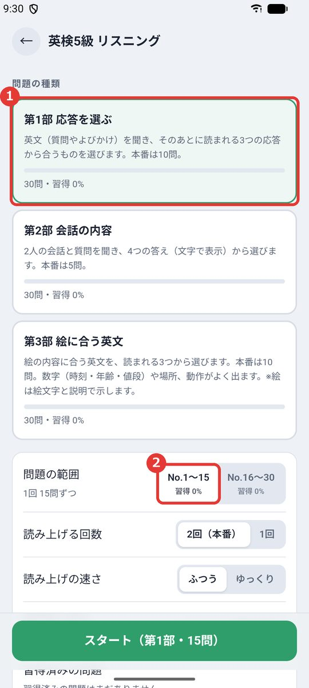
1問題の種類（第1部〜第3部） 2問題の範囲（15問ずつ）
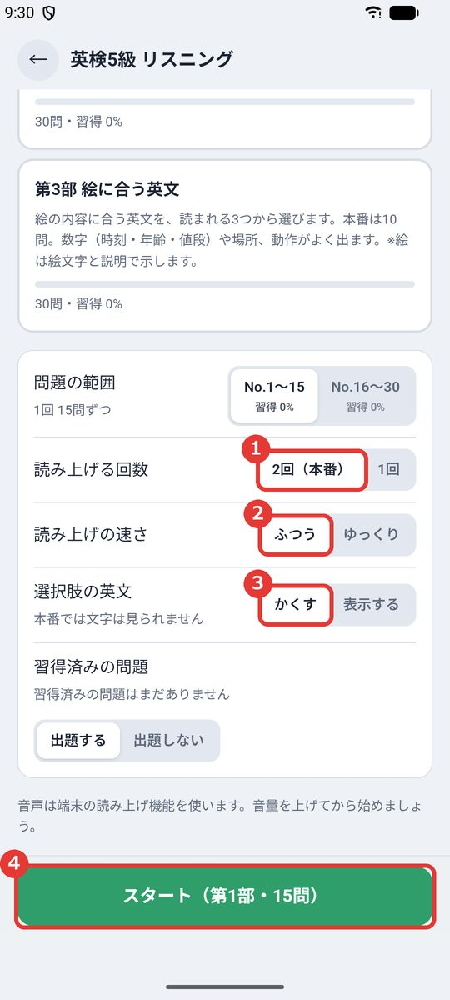
1読み上げる回数 2読み上げの速さ 3選択肢の英文をかくす・表示する 4スタート
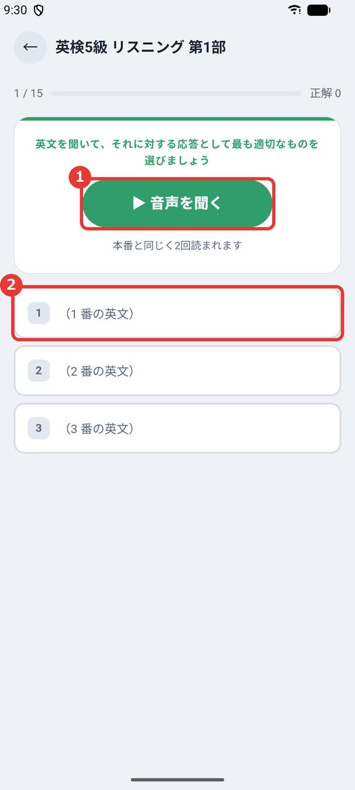
1音声を聞く（本番と同じ回数で読みます） 2答えを押す
- 音声は、端末の読み上げ機能（音声合成）を使います。音量を上げてから始めてください。話している人によって声の高さが変わります
- 本番では選択肢の英文は見られないので、はじめは「かくす」のままがおすすめです
- 答えたあとは、放送された英文と日本語訳、解説が見られます
- 第3部（絵に合う英文）の絵は、絵文字と説明で示します
11. まちがえた問題に再挑戦
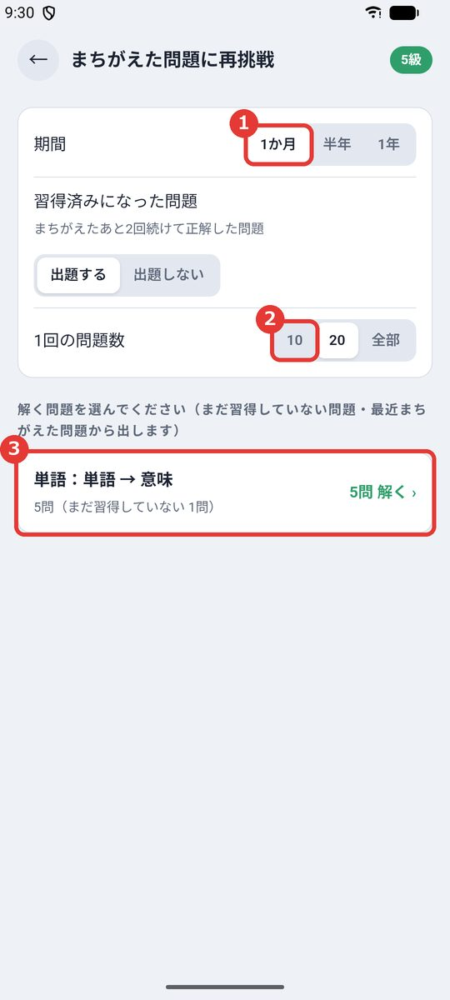
1期間 21回の問題数 3解く種類を選んで「解く」
- 学習メニューの「まちがえた問題を解く」から開きます。これまでにまちがえた問題だけを解き直せます
- 期間は「1か月」「半年」「1年」から選びます。単語は出題形式ごと、リスニングは部ごとに分かれます
- 前回の再挑戦から1か月たつと、ホームと学習メニューにお知らせが出ます。押すとこの画面が開きます
12. 学習記録と1日の目標
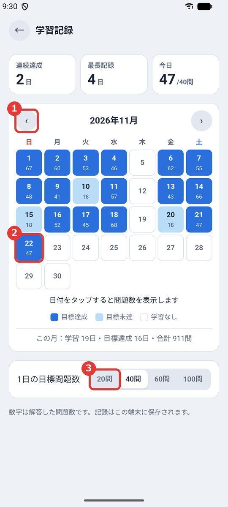
1前の月・次の月 2今日（数字は解いた問題数） 31日の目標問題数
- ホームの「学習記録・カレンダーを見る」から開きます
- 濃い青は目標を達成した日、うすい青は目標に届かなかった日です。日付を押すと、その日の問題数が出ます
- 1日の目標は 20問・40問・60問・100問から選べます。はじめは 40問です
- 「連続達成」は目標を達成した日が何日続いているかです。今日がまだ未達成でも、昨日まで続いていれば途切れません
13. 設定
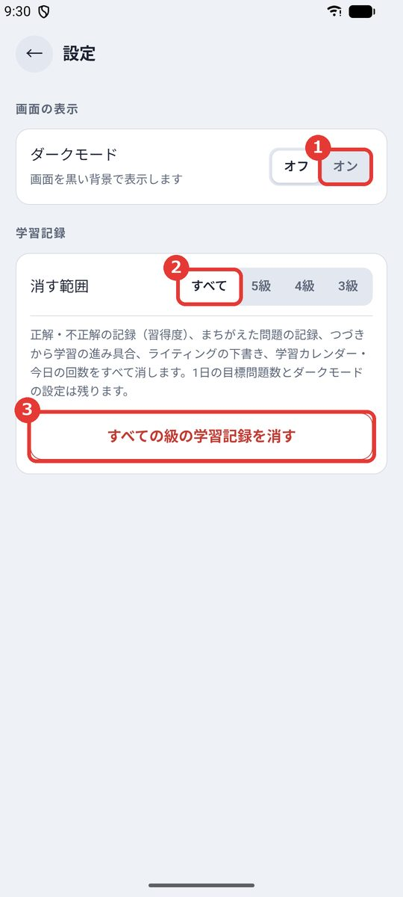
1ダークモード 2学習記録を消す範囲（すべて・級ごと） 3学習記録を消す
- ダークモードをオンにすると、画面を黒い背景で表示します
- 学習記録を消すときは、確認が1回出ます。消した記録は元に戻せません
- 「すべて」を消しても、1日の目標問題数とダークモードの設定は残ります。級ごとに消したときは、学習カレンダーと今日の回数は（全部の級の合計のため）残ります
14. 広告について
- 無料で使えるかわりに、広告が出ます。前回の広告から 40問以上解いたあと、問題のグループを解き終えて結果の画面に移るときに、全画面の広告が出ます。問題の途中では出ません
- 広告は、右上の「×」などで閉じると、結果の画面に戻ります
- 小学生も使うアプリなので、すべての方に子ども向けの設定で広告を出します。広告 ID は使いません
15. よくある質問
学習の記録はどこに保存されますか？
この端末の中だけです。運営者のサーバーには送りません。アプリを消すと、記録も消えます。ほかの端末へ移すことはできません。
リスニングの音が出ません
端末の音量（メディアの音量）を上げてください。それでも出ないときは、端末の設定で「テキスト読み上げ」（音声合成）が使えるか、英語の音声が入っているかを確かめてください。
最初からやり直したい
設定の「学習記録」で、消す範囲を選んで「学習記録を消す」を押します（13. 設定）。
準2級・2級などはありますか？
いまは 5級・4級・3級です。
データの扱いを詳しく知りたい
プライバシーポリシーをご覧ください。
お問い合わせ
DNGG-studio：dngg.studio@gmail.com
このアプリは非公式の学習アプリです。公益財団法人 日本英語検定協会とは関係ありません。「英検」は公益財団法人 日本英語検定協会の登録商標です。
紹介ページへ戻る